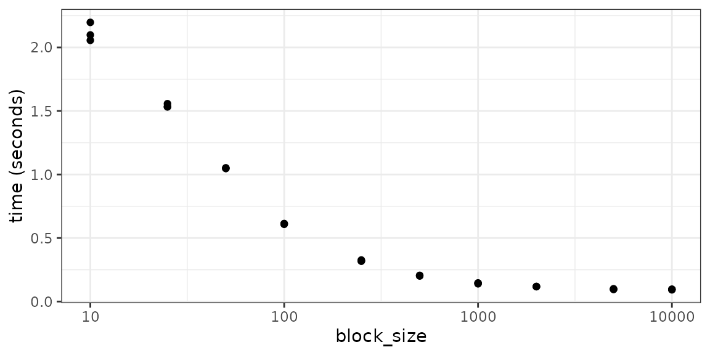
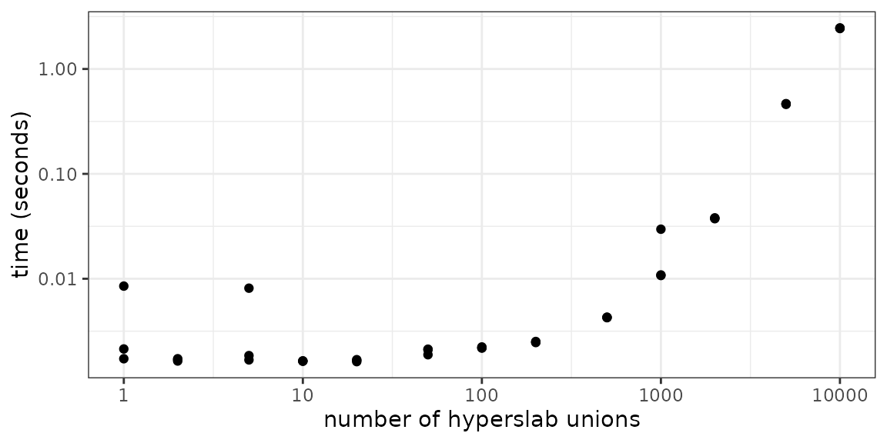

vignettes/practical_tips.Rmd
practical_tips.RmdAbstract
Provides discussion and practical examples for effectively using rhdf5 and the HDF5 file format.
There are scenarios where the most intuitive approach to working with rhdf5 or HDF5 will not be the most efficient. This may be due to unfamiliar bottlenecks when working with data on-disk rather than in memory, or idiosyncrasies in either the HDF5 library itself or the rhdf5 package. This vignette is intended to present a collection of hints for circumventing some common pitfalls.
One of the cool features about the HDF5 file format is the ability to read subsets of the data without (necessarily) having to read the entire file, keeping both the memory usage and execution times of these operations to a minimum. However this is not always as performant as one might hope.
To demonstrate we’ll create some example data. This takes the form of a matrix with 100 rows and 20,000 columns, where the content of each column is the index of the column i.e. column 10 contains the value 10 repeated, column 20 contains 20 repeated etc. This is just so we can easily check we’ve extracted the correct columns. We then write this matrix to an HDF5 file, calling the dataset ‘counts’. 1
m1 <- matrix(rep(1:20000, each = 100), ncol = 20000, byrow = FALSE)
ex_file <- tempfile(fileext = ".h5")
h5write(m1, file = ex_file, name = "counts", level = 6)## You created a large dataset with compression and chunking.
## The chunk size is equal to the dataset dimensions.
## If you want to read subsets of the dataset, you should testsmaller chunk sizes to improve read times.index argument
Now we’ll use the index argument to selectively extract
the first 10,000 columns and time how long this takes.
system.time(
res1 <- h5read(
file = ex_file, name = "counts",
index = list(NULL, 1:10000)
)
)## user system elapsed
## 0.028 0.005 0.031Next, instead of selecting 10,000 consecutive columns we’ll ask for every other column. This should still return the same amount of data and since our dataset is not chunked involves reading the same volume from disk.
index <- list(NULL, seq(from = 1, to = 20000, by = 2))
system.time(
res2 <- h5read(
file = ex_file, name = "counts",
index = index
)
)## user system elapsed
## 0.063 0.005 0.068We can see this is marginally slower, because there’s a small
overhead in selecting this disjoint set of columns, but it’s only
marginal and using the index argument looks sufficient.
If you’re new to R, but have experience with HDF5 you might be more
familiar with using HDF5’s hyperslab selection method^[The parameters
for defining hyperslab selection start,
stride, block, & count are
not particularly intuitive if you are used to R’s index selection
methods. More examples discussing how to specify them can be found at www.hdfgroup.org.
The following code defines the parameters to select every other column,
the same as in our previous example.
start <- c(1, 1)
stride <- c(1, 2)
block <- c(100, 1)
count <- c(1, 10000)
system.time(
res3 <- h5read(
file = ex_file, name = "counts", start = start,
stride = stride, block = block, count = count
)
)## user system elapsed
## 0.06 0.00 0.06
identical(res2, res3)## [1] TRUEThis runs in a similar time to when we used the index
argument in the example above, and the call to identical()
confirms we’re returning the same data. In fact, under the hood,
rhdf5 converts the index argument into
start, stride, block, &
count before accessing the file, which is why the
performance is so similar.
If there is a easily described pattern to the regions you want to access e.g. a single block or a regular spacing, then either of these approaches is effective.
However, things get a little more tricky if you want an irregular
selection of data, which is actually a pretty common operation. For
example, imagine wanting to select a random set of columns from our
data. If there isn’t a regular pattern to the columns you want to
select, what are the options? Perhaps the most obvious thing we can try
is to skip the use of either index or the hyperslab
parameters and use 10,000 separate read operations instead. Below we
choose a random selection of columns2 and then apply the function
f1() to each in turn.
columns <- sample(x = seq_len(20000), size = 1000, replace = FALSE) %>%
sort()
f1 <- function(cols, name) {
h5read(
file = ex_file, name = name,
index = list(NULL, cols)
)
}
system.time(res4 <- vapply(
X = columns, FUN = f1,
FUN.VALUE = integer(length = 100),
name = "counts"
))## user system elapsed
## 19.556 0.058 19.615This is clearly a terrible idea, it takes ages! For reference, using
the index argument with this set of columns takes 0.09
seconds. This poor performance is driven by two things:
h5read() HDF5
identifiers are created for the file, dataset, file dataspace, and
memory dataspace, each of which are checked for validity. This overhead
is negligible when only one call to h5read() is made, but
be comes significant when we make thousands of separate calls.There’s not much more you can do if the dataset is not chunked
appropriately, and using the index argument is reasonable.
However storing data in this format defeats one of HDF5’s key utilities,
namely rapid random access. As such it’s probably fairly rare to
encounter datasets that aren’t chunked in a more meaningful manner. With
this in mind we’ll create a new dataset in our file, based on the same
matrix but this time split into 100
100 chunks.
h5createDataset(
file = ex_file, dataset = "counts_chunked",
dims = dim(m1), storage.mode = "integer",
chunk = c(100, 100), level = 6
)
h5write(obj = m1, file = ex_file, name = "counts_chunked")If we rerun the same code, but reading from the chunked datasets we get an idea for how much time is wasted extracting the entire dataset over and over.
system.time(res5 <- vapply(
X = columns, FUN = f1,
FUN.VALUE = integer(length = 100),
name = "counts_chunked"
))## user system elapsed
## 2.482 0.036 2.519This is still quite slow, and the remaining time is being spent on
the overheads associated with multiple calls to h5read().
To reduce these the function f2()3 defined below splits
the list of columns we want to return into sets grouped by the parameter
block_size. In the default case this means any columns
between 1 & 100 will be placed together, then any between 101 &
200, etc. We then lapply our previous f1()
function over these groups. The effect here is to reduce the number of
calls to h5read(), while keeping the number of hyperslab
unions down by not having too many columns in any one call.
f2 <- function(block_size = 100) {
cols_grouped <- split(columns, (columns - 1) %/% block_size)
do.call(cbind, lapply(cols_grouped, f1, name = "counts_chunked"))
}
system.time(f2())## user system elapsed
## 0.587 0.010 0.597We can see this has a significant effect, although it’s still an
order of magnitude slower than when we were dealing with regularly
spaced subsets. The efficiency here will vary based on a number of
factors including the size of the dataset chunks and the sparsity of the
column index, and you varying the block_size argument will
produce differing performances. The plot below shows the timings
achieved by providing a selection of values to block_size.
It suggests the optimal parameter in this case is probably a block size
of 10000, which took 0.09 seconds - noticeably faster than when passing
all columns to the index argument in a single call.

If we were stuck with the single-chunk dataset and want to minimise
the number of read operations, it’s necessary to create larger
selections than the single column approach used above. We could again
consider using the HDF5 hyperslab selection tools, and if it’s not easy
to discern an underlying pattern to the selection, perhaps the simplest
way of approaching this with the would be to create one selection for
each column. You could then use functions like
H5Scombine_hyperslab() or H5Scombine_select()
to iteratively join these selections until all columns were selected,
and then perform the read operation.
Unfortunately, this approach doesn’t scale very well. This is because creating unions of hyperslabs is currently very slow in HDF5 (see Union of non-consecutive hyperslabs is very slow for another report of this behaviour), with the performance penalty increasing exponentially relative to the number of unions. The plot below shows the the exponential increase in time as the number of hyberslab unions increases.

The time taken to join hyperslabs increases expontentially with the number of join operations. These timings are taken with no reading occuring, just the creation of a dataset selection.
Efficiently extracting arbitrary subsets of a HDF5 dataset with
rhdf5 is a balancing act between the number of hyperslab
unions, the number of calls to h5read(), and the number of
times a chunk is read. Many of the lessons learnt will creating this
document have been incorporated into the h5read() function.
Internally, this function attempts to find the balance by looking for
patterns in the data selection requested, and minimises the number of
hyperslab unions and read operations required to extract the requested
data.
Using rhdf5 it
isn’t possible to open an HDF5 file and write multiple datasets in
parallel. However we can try to mimic this behaviour by writing each
dataset to it’s own HDF5 file in parallel and then using the function
H5Ocopy() to efficiently populate a complete final file.
We’ll test this approach here.
First lets create some example data to we written to our HDF5 files.
The code below creates a list of 10 matrices, filled with random values
between 0 and 1. We then name the entries in the list
dset_1 etc.
Now lets define a function that takes our list of datasets and writes all of them to a single HDF5 file.
simple_writer <- function(file_name, dsets) {
fid <- H5Fcreate(name = file_name)
on.exit(H5Fclose(fid))
for (i in seq_along(dsets)) {
dset_name <- paste0("dset_", i)
h5createDataset(
file = fid, dataset = dset_name,
dims = dim(dsets[[i]]), chunk = c(10000, 10)
)
h5writeDataset(dsets[[i]], h5loc = fid, name = dset_name)
}
}An example of calling this function would look like:
simple_writer(file_name = "my_datasets.h5", dsets = dsets).
This would create the file my_datasets.h5 and it will
contain the 10 datasets we created above, each named dset_1
etc, which are the names we gave the list elements.
Now lets created two functions to tests our split / gather approach
to creating the final file. The first of the functions below will create
a temporary file with a random name and write a single dataset to this
file. The second function expects to be given a table of temporary files
and the name of the dataset they contain. It will then use
H5Ocopy() to write each of these into a single output
file.
## Write a single dataset to a temporary file
## Arguments:
## - dset_name: The name of the dataset to be created
## - dset: The dataset to be written
split_tmp_h5 <- function(dset_name, dset) {
## create a tempory HDF5 file for this dataset
file_name <- tempfile(pattern = "par", fileext = ".h5")
fid <- H5Fcreate(file_name)
on.exit(H5Fclose(fid))
## create and write the dataset
## we use some predefined chunk sizes
h5createDataset(
file = fid, dataset = dset_name,
dims = dim(dset), chunk = c(10000, 10)
)
h5writeDataset(dset, h5loc = fid, name = dset_name)
return(c(file_name, dset_name))
}
## Gather scattered datasets into a final single file
## Arguments:
## - output_file: The path to the final HDF5 to be created
## - input: A data.frame with two columns containing the paths to the temp
## files and the name of the dataset inside that file
gather_tmp_h5 <- function(output_file, input) {
## create the output file
fid <- H5Fcreate(name = output_file)
on.exit(H5Fclose(fid))
## iterate over the temp files and copy the named dataset into our new file
for (i in seq_len(nrow(input))) {
fid2 <- H5Fopen(input$file[i])
H5Ocopy(fid2, input$dset[i], h5loc_dest = fid, name_dest = input$dset[i])
H5Fclose(fid2)
}
}Finally we need to create a wrapper function that brings our split
and gather functions together. Like the simple_writer()
function we created earlier, this takes the name of an output file and
the list of datasets to be written as input. We can also provide a
BiocParallelParam instance from BiocParallel
to trial writing the temporary file in parallel. If the
BPPARAM argument isn’t provided then they will be written
in serial.
split_and_gather <- function(output_file, input_dsets, BPPARAM = NULL) {
if (is.null(BPPARAM)) {
BPPARAM <- BiocParallel::SerialParam()
}
## write each of the matrices to a separate file
tmp <-
bplapply(seq_along(input_dsets),
FUN = function(i) {
split_tmp_h5(
dset_name = names(input_dsets)[i],
dset = input_dsets[[i]]
)
},
BPPARAM = BPPARAM
)
## create a table of file and the dataset names
input_table <- do.call(rbind, tmp) |>
as.data.frame()
names(input_table) <- c("file", "dset")
## copy all datasets from temp files in to final output
gather_tmp_h5(output_file = output_file, input = input_table)
## remove the temporary files
file.remove(input_table$file)
}An example of calling this using two cores on your local machine is:
split_and_gather(tempfile(),
input_dsets = dsets,
BPPARAM = MulticoreParam(workers = 2)
)Below we can see some timings comparing calling
simple_writer() with split_and_gather() using
1, 2, and 4 cores.
## # A tibble: 4 × 3
## expression min median
## <bch:expr> <dbl> <dbl>
## 1 simple writer 28.9 28.9
## 2 split/gather - 1 core 29.3 29.4
## 3 split/gather - 2 cores 15.1 15.4
## 4 split/gather - 4 cores 11.3 11.4We can see from our benchmark results that there is some performance improvement to be achieved by using the parallel approach. Based on the median times of out three iterations using two cores sees an speedup of 1.88 and 2.5 with 4 cores. This isn’t quite linear, presumably because there are overheads involved both in using a two-step process and initialising the parallel workers, but it is a noticeable improvement.
## R version 4.5.2 (2025-10-31)
## Platform: x86_64-pc-linux-gnu
## Running under: Ubuntu 24.04.3 LTS
##
## Matrix products: default
## BLAS: /usr/lib/x86_64-linux-gnu/openblas-pthread/libblas.so.3
## LAPACK: /usr/lib/x86_64-linux-gnu/openblas-pthread/libopenblasp-r0.3.26.so; LAPACK version 3.12.0
##
## locale:
## [1] LC_CTYPE=C.UTF-8 LC_NUMERIC=C LC_TIME=C.UTF-8
## [4] LC_COLLATE=C.UTF-8 LC_MONETARY=C.UTF-8 LC_MESSAGES=C.UTF-8
## [7] LC_PAPER=C.UTF-8 LC_NAME=C LC_ADDRESS=C
## [10] LC_TELEPHONE=C LC_MEASUREMENT=C.UTF-8 LC_IDENTIFICATION=C
##
## time zone: UTC
## tzcode source: system (glibc)
##
## attached base packages:
## [1] stats graphics grDevices utils datasets methods base
##
## other attached packages:
## [1] BiocParallel_1.44.0 ggplot2_4.0.0 dplyr_1.1.4
## [4] rhdf5_2.55.4 BiocStyle_2.38.0
##
## loaded via a namespace (and not attached):
## [1] gtable_0.3.6 jsonlite_2.0.0 compiler_4.5.2
## [4] BiocManager_1.30.26 tidyselect_1.2.1 rhdf5filters_1.22.0
## [7] parallel_4.5.2 jquerylib_0.1.4 systemfonts_1.3.1
## [10] scales_1.4.0 textshaping_1.0.4 yaml_2.3.10
## [13] fastmap_1.2.0 R6_2.6.1 labeling_0.4.3
## [16] generics_0.1.4 knitr_1.50 tibble_3.3.0
## [19] bookdown_0.45 desc_1.4.3 bslib_0.9.0
## [22] pillar_1.11.1 RColorBrewer_1.1-3 rlang_1.1.6
## [25] utf8_1.2.6 cachem_1.1.0 xfun_0.54
## [28] S7_0.2.0 fs_1.6.6 sass_0.4.10
## [31] cli_3.6.5 withr_3.0.2 pkgdown_2.1.3
## [34] magrittr_2.0.4 Rhdf5lib_1.32.0 digest_0.6.37
## [37] grid_4.5.2 lifecycle_1.0.4 vctrs_0.6.5
## [40] bench_1.1.4 evaluate_1.0.5 glue_1.8.0
## [43] farver_2.1.2 codetools_0.2-20 ragg_1.5.0
## [46] rmarkdown_2.30 tools_4.5.2 pkgconfig_2.0.3
## [49] htmltools_0.5.8.1